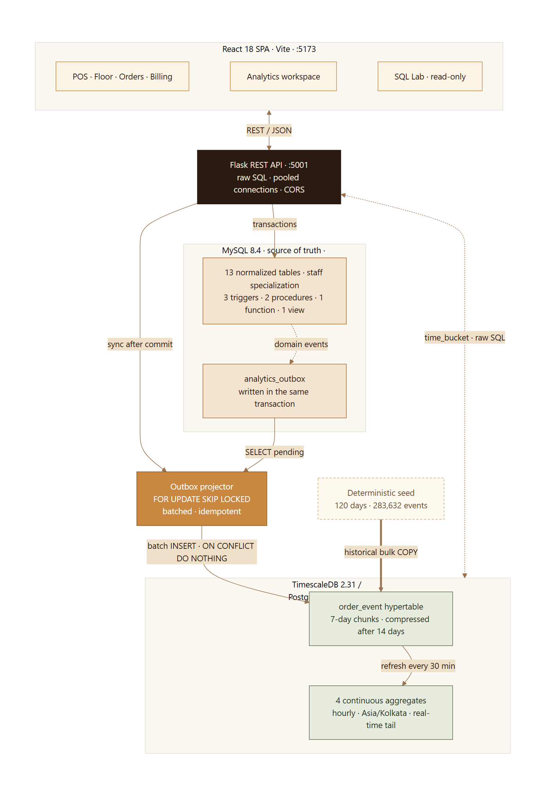
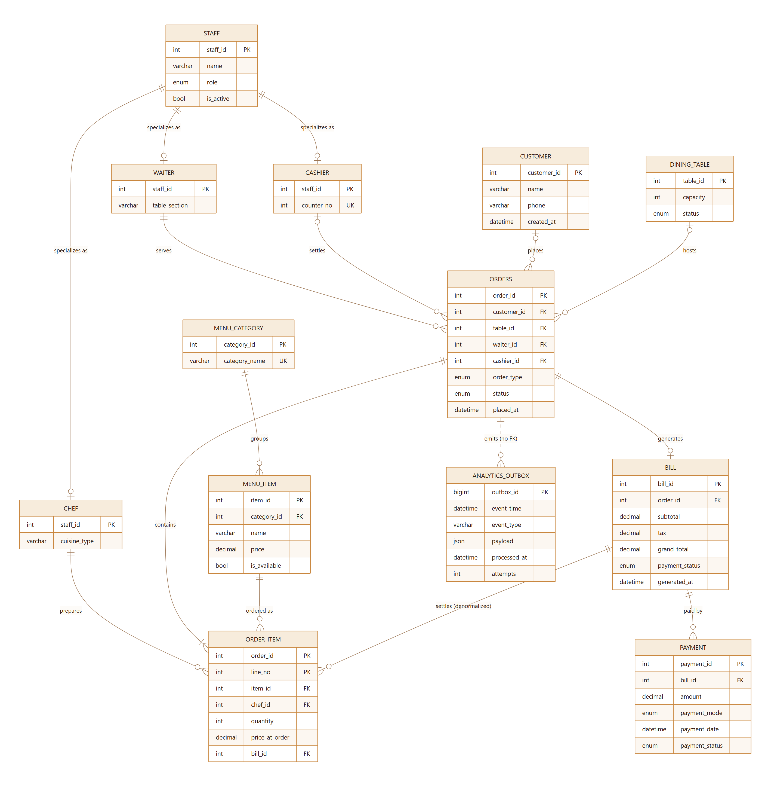
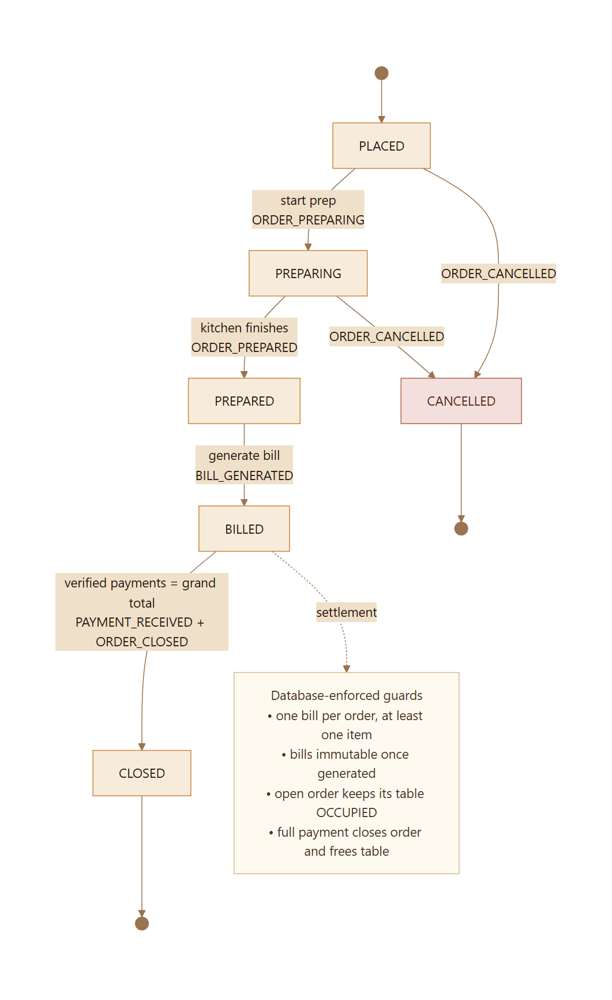

DA3 — Database Systems Mini-Project Extension
React 18 · Flask 3 · MySQL 8.4 · TimescaleDB 2.31 / PostgreSQL 17
Date: 25 October 2026
Repository: Saffron House DA3 (README.md, docs/DEMO.md)
Implementation report · 25 October 2026
Operational systems and analytical systems optimise for different things. A restaurant POS must enforce invariants, survive concurrent writers and settle money; a reporting layer must scan time-ordered facts quickly and summarise them cheaply. Saffron House demonstrates both workloads in one application. MySQL 8.4 remains the authoritative operational database, implemented as a normalised 13-table schema with a staff EER specialization, 14 foreign keys, three triggers, two stored procedures, a function and a reporting view. Every meaningful POS change also writes a JSON event to a transactional outbox in the same database transaction. A Python projector drains that outbox into a TimescaleDB hypertable using FOR UPDATE SKIP LOCKED, batched inserts and idempotent conflict handling. TimescaleDB maintains four continuous aggregates aligned to restaurant-local time, keeps recent buckets queryable in real time, compresses chunks older than 14 days and retains two years of history.
A React frontend provides the floor plan, POS, order tickets, billing counter, receipts, analytics workspace and read-only SQL Lab; Flask exposes the raw-SQL API. The deterministic seed contains 120 days of operations: 29,831 orders, 100,180 order lines and 283,634 events. Full-history revenue and successful collections reconcile exactly between both stores. In the 90-day benchmark, continuous aggregates answered daily revenue 5.38 times and hourly revenue 4.50 times faster than the MySQL baseline; the raw event store answered the top-items query 5.60 times faster. The report documents the design, schema, queries, verification and the limits of those measurements.
Keywords: polyglot persistence, transactional outbox, TimescaleDB, continuous aggregates, time-series databases, MySQL, restaurant POS, data reconciliation.
The previous phase of this mini-project (DA2) produced the conceptual and logical design of a Restaurant Order and Billing System: an ER model, a normalised relational schema and PL/SQL procedures for the core tasks. DA3 requires a working implementation that uses a modern database technology from outside the document-store space occupied by MongoDB, while retaining the stated React, Python, Flask and MySQL stack.
The extension was interpreted as an opportunity to build a genuinely polyglot system rather than to replace the operational schema with a trend-driven database. MySQL was recommended by the instructor and is well suited to the part of the problem that needs transactions and constraints. The analytical questions that a restaurant actually asks - revenue by hour, peak service windows, menu mix, kitchen percentiles, payment behaviour - have a different access pattern and a different data shape. TimescaleDB was added as the modern database for that workload.
The aim is a complete, demonstrable restaurant POS whose operational truth remains consistent while a time-series read model is maintained alongside it.
Specific objectives:
In scope: a single-restaurant service console, one currency (INR), one restaurant time zone (Asia/Kolkata), live POS writes, analytics over 7/30/90-day windows, a deterministic historical dataset, a read-only SQL Lab and a local benchmark.
Out of scope: authentication and role-based authorisation, multi-tenant isolation, refunds and voids, supplier/inventory management, online ordering integrations, horizontally scaled deployment, production backup and disaster recovery.
The brief required (a) a modern database technology other than MongoDB, (b) the React, Python, Flask and MySQL stack, and (c) an extension of the existing restaurant domain rather than an unrelated toy. The implementation also had to run locally, demonstrate realistic data volumes and remain explainable in a live viva.
The two workloads have conflicting physical preferences:
| Property | Operational workload | Analytical workload |
|---|---|---|
| Dominant operations | Point reads, inserts, updates, multi-row transactions | Large time-range scans, grouped aggregation |
| Data shape | Normalised to avoid update anomalies | Denormalised to avoid joins at read time |
| Freshness expectation | Immediate, strict | Seconds to minutes is usually acceptable |
| Indexes | Primary/foreign keys, selective lookup indexes | Time/type indexes, chunk pruning, columnar compression |
| Failure priority | Correctness of money and state | Availability of charts; can lag and catch up |
| Typical query | "Is this table free?" "What is the balance?" | "Revenue by hour for the last 90 days" |
Forcing both into one schema either burdens the operational database with large scans or deprives analytics of history-friendly physical design. A polyglot design keeps each store fit for purpose.
MySQL remains the system of record. It owns the ledger, order state, table state and every constraint that protects money. TimescaleDB is a derived read model for event-shaped analytics. It is never the authority for whether an order is open or what a bill says; it is a queryable history of facts that were already committed in MySQL.
The critical design decision is that the two stores are linked by a transactional outbox inside MySQL. A POS transaction writes its business rows and its analytics event rows atomically. A projector then copies the committed events into TimescaleDB. This avoids a distributed transaction between two engines, which would add two-phase commit complexity and a new failure mode for little benefit.
FILTER, window functions, CTEs and percentile_cont are available alongside time-series features.order_event is partitioned into 7-day chunks without changing application queries.| Option | Strengths | Why it was not selected here |
|---|---|---|
| Plain MySQL only | One engine, simple operations, strong transactions | Keeps analytical scans on the OLTP server; rollups and compression must be hand-built; less convincing as a modern-technology extension |
| PostgreSQL with manual partitioning | Full SQL, mature, no extra extension | Requires custom chunk management, rollup jobs, compression and retention; TimescaleDB packages those capabilities cleanly |
| InfluxDB | Purpose-built time-series ingestion and retention | Another query language and data model; relational joins, monetary semantics and ad-hoc SQL inspection are weaker for this use case |
| ClickHouse | Excellent large-scale OLAP performance | Operationally heavy for a laptop demo; duplicate/upsert semantics and transactional modelling are less natural for a small educational system |
| MongoDB time-series collections | Modern document store with time-series support | Excluded by the brief; documents would also duplicate a ledger whose core invariants are relational |
| Two-phase commit across stores | Strong atomic visibility | Operational complexity, coordinator failure modes and poor local reproducibility; an outbox achieves the required consistency with a simpler failure model |
| Component | Version | Role |
|---|---|---|
| MySQL | 8.4.13 (InnoDB) | Operational source of truth, outbox |
| TimescaleDB | 2.31.0 | Hypertable, continuous aggregates, policies |
| PostgreSQL | 17.11 | SQL engine beneath TimescaleDB |
| Python / Flask | 3.12 / 3.1 | API, generator, projector |
| React / Vite | 18.3 / 5.4 | Single-page console |
| Docker Compose | Desktop, Linux containers | Reproducible database runtime |
The databases are exposed on non-default host ports (MySQL 3307, TimescaleDB 5433) to avoid collisions with locally installed servers. Flask listens on 5001 and Vite on 5173. Configuration is read from a gitignored .env; .env.example documents every key.
| ID | Requirement | Implementation |
|---|---|---|
| FR1 | Manage a dining room and menu | 32 tables in four sections; 8 categories; 48 dishes; availability and category maintenance |
| FR2 | Place a dine-in, takeaway or delivery order | POS with table, waiter, guest, chef routing and multiple lines; prices snapshotted |
| FR3 | Enforce a valid order lifecycle | API transition map plus MySQL status constraints; only PLACED/PREPARING accept new lines |
| FR4 | Track kitchen progress | ORDER_PREPARING and ORDER_PREPARED events; preparation duration computed at transition |
| FR5 | Generate one bill per order | generate_bill procedure; unique bill.order_id; state and item checks |
| FR6 | Support split and partial settlement | Many payments per bill; trigger recomputes UNPAID/PARTIAL/PAID and closes on full payment |
| FR7 | Release tables automatically | Insert/update triggers synchronise dining_table.status with the order lifecycle |
| FR8 | Provide receipts and audit trail | Printable receipt, payment history, order timeline, outbox and event history |
| FR9 | Provide operational dashboards | Seven-day KPIs, revenue rhythm, top sellers, payment mix and cross-store reconciliation |
| FR10 | Provide time-series analytics | Revenue, menu/flow, kitchen, payments and platform tabs over 7/30/90 local days |
| FR11 | Provide safe database inspection | 15-preset SQL Lab across both engines; server-side read-only enforcement; 500-row cap |
| FR12 | Demonstrate performance and storage behaviour | Interleaved benchmark, compression stats, chunk inventory and CAGG inventory |
| ID | Requirement | Evidence |
|---|---|---|
| NFR1 | Operational writes must be atomic | Business rows and outbox rows share one InnoDB transaction; bills use stored routines |
| NFR2 | Analytics may lag but must converge | Outbox with retry metadata, idempotent projection and manual /api/system/sync; reconciliation at zero |
| NFR3 | Common reads must be fast and stable | Pooled connections, indexed queries, precomputed aggregates, bounded API pagination |
| NFR4 | The system must be reproducible | Dockerised versions, deterministic seed (20261025), scripted schema and seed |
| NFR5 | The interface must be usable on the demo laptop and a phone | Responsive layout verified at 1440 px and 390 px |
| NFR6 | Failures must be visible and explainable | /api/health, UI "Dual store live/Degraded" chip, outbox attempts/last_error, analytics 503 handling |
| NFR7 | Design choices must be defensible in a viva | Commentary in README/report, SQL Lab presets, honest benchmark caveats |
The application models one internal actor, the service team (waiters, chefs and cashiers are specialised staff records). An analyst is the same operator using the analytics workspace. There is no end-customer-facing UI.
The primary flow is: seat or pick a table → build a ticket → send to kitchen → start prep → mark prepared → generate bill → take one or more payments → close and release the table → inspect the same facts analytically.

| Component | Responsibility | Key technology |
|---|---|---|
| React SPA | Rendering, forms, client state, charts, toasts, routing | React 18, React Router, Recharts |
| Flask API | Validation, transactions, raw SQL, projection sync, error mapping | Flask 3, mysql-connector, psycopg 3 |
| MySQL | Authoritative ledger, lifecycle constraints, triggers/routines, outbox | InnoDB, MySQL 8.4 |
| Projector | Bounded batches of pending outbox rows, idempotent insert into analytics | Python, FOR UPDATE SKIP LOCKED, ON CONFLICT |
| TimescaleDB | Append-only event history, continuous aggregates, compression, retention | TimescaleDB 2.31 |
| Seed generator | Deterministic history for both stores and CSV evidence | Python random.Random(20261025) |
| SQL Lab | Curated read-only queries and editable SQL over both stores | Flask endpoint + React editor |
| Benchmark | Interleaved timing and revenue reconciliation | Python perf_counter, HTTP API |
POST /api/orders).orders, order_item (through add_order_item), payment, or bill (through generate_bill).analytics_outbox rows in the same transaction, with an event timestamp, type and JSON payload.sync counts.FOR UPDATE SKIP LOCKED, inserts them into order_event with ON CONFLICT (source_outbox_id, event_time) DO NOTHING, marks the outbox rows processed in MySQL, and repeats up to a bounded number of batches. After projecting, it refreshes the hourly buckets it touched in all four continuous aggregates, so the dashboard reconciles immediately after a live write.Table occupancy is not computed in application code. The order triggers update dining_table.status inside the same MySQL transaction, so a crash cannot leave a table silently occupied or free without a corresponding order commit.
The outbox provides at-least-once delivery rather than exactly-once execution:
(source_outbox_id, event_time) plus ON CONFLICT DO NOTHING makes retries idempotent.outbox_id, preserving commit order within a projector run.FOR UPDATE SKIP LOCKED allows more than one projector instance without duplicate work.attempts and last_error in MySQL but never rolls back a POS commit. Events remain pending and can be replayed.There is no background daemon in the demo: projection is invoked after each write and by POST /api/system/sync. This keeps the causal chain visible in a demonstration and avoids a hidden scheduler. In production the same function would run in a worker loop or scheduled job.
A distributed transaction would require a coordinator that both MySQL and PostgreSQL trust, careful handling of in-doubt transactions and operational tooling that is disproportionate to an academic project. The outbox accepts temporary analytical lag in exchange for a simple invariant: if a business change committed, its event is durably queued; if the event was projected, it can be safely projected again.
GET /api/health reports both engines, their versions, counts, open orders, occupied tables and outbox status. The UI header turns the same information into a "Dual store live" or degraded state. The data-platform tab exposes chunk count, compression ratio, CAGG inventory, outbox health and database sizes live over the API. Errors are mapped to structured JSON: MySQL SIGNAL messages become HTTP 400, unique violations 409, lock conflicts 409 and analytics unavailability 503.

The operational schema has 13 tables and 14 foreign keys.
| Group | Table | Purpose and notable attributes |
|---|---|---|
| Staff | staff |
Shared identity: name, contact, role, active flag, contact-length check |
| Staff | waiter |
Specialisation: staff_id PK/FK, table_section |
| Staff | chef |
Specialisation: staff_id PK/FK, cuisine_type |
| Staff | cashier |
Specialisation: staff_id PK/FK, unique counter_no |
| Dimensions | customer |
Guest profile; unique email; optional phone |
| Dimensions | dining_table |
1-20 seats, FREE/OCCUPIED |
| Dimensions | menu_category |
Unique category name |
| Dimensions | menu_item |
Price, availability, vegetarian flag, category FK |
| Core | orders |
Type, status, waiter, optional table/customer/cashier, lifecycle timestamps |
| Core | bill |
One per order; subtotal, tax, discount, grand total, payment status |
| Core | order_item |
Composite (order_id, line_no); quantity, price snapshot, chef, denormalised bill_id |
| Core | payment |
Many per bill; amount, mode, timestamp, SUCCESS/FAILED/REFUNDED |
| Integration | analytics_outbox |
Event type, JSON payload, timestamps, attempts, last error |
Waiters, chefs and cashiers share identity and contact data but have different attributes and different foreign-key roles. Shared-primary-key specialisation preserves the "every waiter is a staff member" rule while preventing a chef from being assigned as a waiter through application convention alone. orders.waiter_id references waiter(staff_id), order_item.chef_id references chef(staff_id), and orders.cashier_id references cashier(staff_id). The database, not the UI, enforces the role.
UNIQUE (order_id).Indexes support the visible access paths: orders by (status, placed_at), table_id and placed_at; bills by generated_at; order items by bill_id and item_id; payments by (bill_id, payment_date) and payment_date; outbox by (processed_at, outbox_id).
order_item.bill_id repeats a relationship that is already derivable through orders. It is retained from the DA2 design because it makes "which lines belong to this bill" a direct indexed lookup. The risk is a disagreement with bill. The implementation accepts the risk explicitly and audits it: SQL Lab's Denormalization audit counts billed lines whose bill_id is null or different from the bill generated for their order. It returns zero on the seeded data, and the bill procedure assigns the value in the same transaction that creates the bill.
The analytics store is intentionally not a mirror of the normalised schema. It contains one wide event table:
| Column group | Columns | Notes |
|---|---|---|
| Time/type | event_id, event_time, event_type |
Hypertable partition key is event_time; event type is constrained |
| Order context | order_id, order_type, table_id, customer_id |
Snapshot at event time |
| People | waiter_id, waiter_name, chef_id, chef_name |
Names are captured so later renames do not rewrite history |
| Item snapshot | item_id, item_name, category_name |
Enables menu analytics without cross-database joins |
| Money | quantity, amount, payment_mode, bill_id, payment_id |
Amount semantics depend on event type |
| Kitchen | prep_seconds |
Set on ORDER_PREPARED |
| Idempotency | source_outbox_id |
With event_time, prevents duplicate projection |
A denormalised table would be a poor choice for the operational ledger: it would repeat mutable facts and make corrections expensive. It is the right choice for an append-only analytical history, where the question is "what was true when the event happened?" and where eliminating joins removes most of the query cost.
order_event, created on event_time, chunk interval 7 days.(event_id, event_time) because the partition column must be part of the key.(source_outbox_id, event_time) for idempotent projection.(event_type, event_time DESC), (order_id, event_time DESC), (item_id, event_time DESC), (chef_id, event_time DESC), (waiter_id, event_time DESC) and (bill_id, event_time DESC).event_type, ordered by event_time DESC, and applied to chunks older than 14 days.| Aggregate | Source events | Stored measures |
|---|---|---|
sales_hourly |
BILL_GENERATED |
bills, revenue, average bill, items billed |
order_activity_hourly |
ORDER_PLACED |
orders placed |
payments_hourly |
PAYMENT_RECEIVED |
payment count, amount collected |
kitchen_performance_hourly |
ORDER_PREPARED |
orders prepared, average and maximum prep seconds |
All buckets use time_bucket('1 hour', event_time, 'Asia/Kolkata'), so a "day" in the UI is a restaurant-local day rather than a UTC day. Each aggregate has timescaledb.materialized_only = false, so recent unmaterialised data can be read from raw events; after each live batch, the projector also refreshes the touched hours so the same data is materialised for subsequent reads.
Refresh policies use a three-day start offset, a one-hour end offset and a 30-minute schedule. The offsets deliberately leave the current hour out of scheduled refreshes and avoid reprocessing excessively old history. To make live reconciliation exact, the projector refreshes the hours touched by each projected batch in all four views; the policies remain the periodic safety net. Daily charts are produced by rolling hourly buckets up; hourly granulation was chosen because it serves peak-hour analysis and can be aggregated further without loss.
Consistency depends on making each measure mean one thing:
amount on BILL_GENERATED events. It is recognised when the bill is issued, not when cash arrives.amount on PAYMENT_RECEIVED events. Split payments produce one event per successful payment.BILL_GENERATED events; an order cannot have more than one.ORDER_PLACED; cancellations are reported separately and never become revenue.orders.placed_at to the prepared transition, stored only on ORDER_PREPARED.This is why the full-history billed revenue and collected payments differ by a small amount: unpaid balances on partial bills exist by design. It is also why "revenue" and "collections" are never mixed in one KPI without explanation.
| Type | Count | Objects |
|---|---|---|
| Tables | 13 | staff, waiter, chef, cashier, customer, dining_table, menu_category, menu_item, orders, bill, order_item, payment, analytics_outbox |
| Foreign keys | 14 | Staff specialisations, dimensions, order links, bill, items, payments |
| Triggers | 3 | trg_orders_ai_status, trg_orders_au_status, trg_payment_ai_bill |
| Stored procedures | 2 | add_order_item, generate_bill |
| Function | 1 | calc_grand_total |
| View | 1 | DailySalesSummary |
| Hypertables | 1 | order_event |
| Continuous aggregates | 4 | sales_hourly, order_activity_hourly, payments_hourly, kitchen_performance_hourly |
| Policies | 6 | 4 refresh, 1 compression, 1 retention |
The staff specialisation uses shared primary keys and cascading deletes:
CREATE TABLE staff (
staff_id INT AUTO_INCREMENT PRIMARY KEY,
name VARCHAR(100) NOT NULL,
contact VARCHAR(20) NOT NULL,
role ENUM('WAITER','CHEF','CASHIER') NOT NULL,
is_active BOOLEAN NOT NULL DEFAULT TRUE,
CONSTRAINT chk_staff_contact CHECK (CHAR_LENGTH(contact) >= 10)
) ENGINE = InnoDB;
CREATE TABLE waiter (
staff_id INT PRIMARY KEY,
table_section VARCHAR(50) NOT NULL,
CONSTRAINT fk_waiter_staff FOREIGN KEY (staff_id)
REFERENCES staff (staff_id) ON DELETE CASCADE
) ENGINE = InnoDB;
Order lines preserve price history and carry the deliberate denormalisation:
CREATE TABLE order_item (
order_id INT NOT NULL,
line_no INT NOT NULL,
item_id INT NOT NULL,
chef_id INT NOT NULL,
quantity INT NOT NULL,
price_at_order DECIMAL(10,2) NOT NULL,
bill_id INT NULL,
PRIMARY KEY (order_id, line_no),
CONSTRAINT chk_order_item_qty CHECK (quantity > 0),
CONSTRAINT fk_oi_order FOREIGN KEY (order_id) REFERENCES orders(order_id) ON DELETE CASCADE,
CONSTRAINT fk_oi_bill FOREIGN KEY (bill_id) REFERENCES bill(bill_id) ON DELETE SET NULL
) ENGINE = InnoDB;
The outbox is a normal InnoDB table, which is the point: it participates in the same transaction and recovery as the business rows.
CREATE TABLE analytics_outbox (
outbox_id BIGINT AUTO_INCREMENT PRIMARY KEY,
event_time DATETIME(6) NOT NULL,
event_type VARCHAR(40) NOT NULL,
payload JSON NOT NULL,
created_at DATETIME(6) NOT NULL DEFAULT CURRENT_TIMESTAMP(6),
processed_at DATETIME(6) NULL,
attempts INT NOT NULL DEFAULT 0,
last_error VARCHAR(500) NULL,
INDEX idx_outbox_pending (processed_at, outbox_id)
) ENGINE = InnoDB;
| Trigger | Event | Behaviour |
|---|---|---|
trg_orders_ai_status |
After order insert | Marks the table OCCUPIED when a new order has an active status and a table |
trg_orders_au_status |
After order update | Marks the table FREE on CLOSED/CANCELLED; otherwise keeps it OCCUPIED |
trg_payment_ai_bill |
After successful payment insert | Recomputes the bill's UNPAID/PARTIAL/PAID status; closes the order when the paid sum reaches the grand total |
The payment trigger is where settlement becomes an atomic database fact rather than a UI convention:
CREATE TRIGGER trg_payment_ai_bill
AFTER INSERT ON payment
FOR EACH ROW
BEGIN
IF NEW.payment_status = 'SUCCESS' THEN
SELECT COALESCE(SUM(amount), 0) INTO v_paid
FROM payment
WHERE bill_id = NEW.bill_id AND payment_status = 'SUCCESS';
SELECT grand_total, order_id INTO v_total, v_order_id
FROM bill WHERE bill_id = NEW.bill_id;
UPDATE bill
SET payment_status = CASE
WHEN v_paid >= v_total THEN 'PAID'
WHEN v_paid > 0 THEN 'PARTIAL'
ELSE 'UNPAID' END
WHERE bill_id = NEW.bill_id;
IF v_paid >= v_total THEN
UPDATE orders
SET status = 'CLOSED',
closed_at = COALESCE(closed_at, NEW.payment_date)
WHERE order_id = v_order_id AND status <> 'CLOSED';
END IF;
END IF;
END
The trigger keeps the table status correct through trg_orders_au_status; the API then reads the new order state and emits ORDER_CLOSED in the same transaction. The business facts (bill paid, order closed) and the integration fact (event queued) still commit together.
add_order_item validates that the order exists, is not billed, is PLACED or PREPARING, the quantity is positive, the chef and menu item exist, and the item is available. It computes the next line number and inserts the line inside the caller's transaction.
generate_bill validates the order and duplicate-bill condition, rejects closed/cancelled orders and empty orders, computes subtotal from snapshotted prices, applies tax and discount, inserts the bill, stamps bill_id on all order lines and moves the order to BILLED.
calc_grand_total returns subtotal + tax - discount_amount for a bill; it is used as a consistency check against the stored total.
DailySalesSummary is the relational baseline for the same daily revenue question:
CREATE OR REPLACE VIEW DailySalesSummary AS
SELECT DATE(generated_at) AS sale_date,
COUNT(bill_id) AS total_bills,
SUM(grand_total) AS total_revenue
FROM bill
GROUP BY DATE(generated_at);
The hypertable and its idempotency constraint:
CREATE TABLE order_event (
event_id BIGSERIAL,
event_time TIMESTAMPTZ NOT NULL,
event_type TEXT NOT NULL,
order_id BIGINT NOT NULL,
...
source_outbox_id BIGINT,
PRIMARY KEY (event_id, event_time),
UNIQUE (source_outbox_id, event_time)
);
SELECT create_hypertable(
'order_event', 'event_time',
chunk_time_interval => INTERVAL '7 days',
if_not_exists => TRUE
);
A continuous aggregate and its policy:
CREATE MATERIALIZED VIEW sales_hourly
WITH (timescaledb.continuous) AS
SELECT time_bucket('1 hour', event_time, 'Asia/Kolkata') AS bucket,
COUNT(*) AS bills,
SUM(amount) AS revenue,
AVG(amount) AS avg_bill,
SUM(quantity) AS items_billed
FROM order_event
WHERE event_type = 'BILL_GENERATED'
GROUP BY bucket
WITH NO DATA;
ALTER MATERIALIZED VIEW sales_hourly
SET (timescaledb.materialized_only = false);
SELECT add_continuous_aggregate_policy('sales_hourly',
start_offset => INTERVAL '3 days',
end_offset => INTERVAL '1 hour',
schedule_interval => INTERVAL '30 minutes');
Lifecycle policies complete the physical design:
ALTER TABLE order_event SET (
timescaledb.compress,
timescaledb.compress_segmentby = 'event_type',
timescaledb.compress_orderby = 'event_time DESC'
);
SELECT add_compression_policy('order_event', INTERVAL '14 days');
SELECT add_retention_policy('order_event', INTERVAL '730 days');
The DA2 PL/SQL layer was not copied verbatim; it was redesigned for MySQL and PostgreSQL semantics.
| Concern | MySQL implementation | PostgreSQL / TimescaleDB implication |
|---|---|---|
| Enumerated status | Native ENUM + CHECKs |
Event type uses TEXT + CHECK instead |
| Raising business errors | SIGNAL SQLSTATE '45000'; API maps errno 1644 |
Python raises/validates before SQL |
| Routine syntax | DELIMITER, CALL proc(..., @out) |
Projection is plain parameterised SQL |
| JSON storage | Native JSON column |
Not stored; event payload is validated on projection |
| Local time | DATETIME + session +05:30 |
TIMESTAMPTZ, buckets created with Asia/Kolkata |
| Idempotency | Outbox row processed_at |
ON CONFLICT (source_outbox_id, event_time) DO NOTHING |
| Batch locking | FOR UPDATE SKIP LOCKED in MySQL |
Plain inserts; conflicts ignored |
| Analytics-specific | DATE() view baseline |
time_bucket, FILTER, percentile_cont, CAGGs |
The API could compute bills in Python, but the procedure centralises the financial rules inside the database where they cannot be bypassed by another client, and it is closer to the DA2 PL/SQL design. The procedure and the API are not redundant: the API validates user intent and maps errors; the procedure enforces invariants and writes the authoritative rows.
backend/scripts/seed.py is a deterministic Python generator. A fixed seed (20261025) drives every random choice: item popularity, party size, order timing, discounts, split payments and cancellations. The model includes:
| Measure | Value |
|---|---|
| History | 120 days |
| Orders | 29,831 |
| Order lines | 100,180 |
| Bills | 29,465 |
| Payments | 35,400 |
| Events | 283,634 |
| Customers | 420 |
| Menu items / categories | 48 / 8 |
| Staff | 43 |
| Tables | 32 |
| Open orders / occupied tables | 9 / 9 |
| Fully paid / partial bills | 29,462 / 3 |
Event distribution: 29,831 ORDER_PLACED, 100,180 ITEM_ADDED, 29,469 ORDER_PREPARING, 29,467 ORDER_PREPARED, 29,465 BILL_GENERATED, 35,400 PAYMENT_RECEIVED, 29,462 ORDER_CLOSED and 360 ORDER_CANCELLED.
Payments exceed bills because a single bill can be settled in multiple transactions. Billed orders exceed closed orders by three because three partial bills remain open. Prepared orders are fewer than placed orders because cancellations can occur before the kitchen finishes.
data/generated/order_events.csv.data/sample/ (orders, items, bills, payments, events, staff, tables, menu, customers).ANALYZE TABLE.order_event and load the CSV through PostgreSQL COPY for speed.data/generated/seed_summary.json with volumes, timings and compression results.Observed timing on the reference laptop: 7.0 s generation, 18.2 s MySQL load, 5.9 s TimescaleDB load, 39.4 s total. On a rerun, the script truncates both data sets but does not drop the schemas.
A fixed seed makes screenshots, benchmark windows and reconciliation figures repeatable. It does not make the data statistically representative of any real restaurant; demand patterns are hand-crafted. The generator is a test harness, not a forecasting model.
The historical dataset also bypasses the outbox: events are COPY-loaded directly because replaying 283k rows through the projector would add minutes of setup for no teaching value. Live writes, which are the behaviour being demonstrated, do use the outbox. The report and UI call this out explicitly rather than presenting seed storage as proof of streaming throughput.

| User action | Transactional work in MySQL | Event(s) emitted | Analytics effect |
|---|---|---|---|
| Send ticket | Insert orders; CALL add_order_item per line; table trigger marks occupied |
ORDER_PLACED, one ITEM_ADDED per line |
New order activity; line revenue and menu demand |
| Start prep | Update orders to PREPARING |
ORDER_PREPARING |
Order activity history |
| Mark prepared | Update orders to PREPARED, set prepared_at; compute prep seconds |
ORDER_PREPARED with prep_seconds |
Kitchen throughput and percentiles |
| Generate bill | CALL generate_bill; bill row, line stamps, status BILLED |
BILL_GENERATED with grand total and item count |
Sales revenue, bills, daily/hourly rollups |
| Record payment | Insert payment; trigger recomputes bill status; may close order and free table |
PAYMENT_RECEIVED; ORDER_CLOSED if fully settled |
Collections, payment mix, order closure |
| Cancel order | Update orders to CANCELLED, set closed_at; trigger frees table |
ORDER_CANCELLED |
Cancellation count; no revenue |
POST /api/orders locks the target table with SELECT ... FOR UPDATE and checks for an existing active order. This prevents two waiters from opening orders on the same table concurrently. It then inserts the order, invokes add_order_item for each line, reads the joined line context (item name, category, chef name, snapshotted price) and writes events. Table validation, item validation and event emission are in the same transaction.
For takeaway and delivery, table_id is forced to null. The schema check constraint enforces the same rule independently.
Only PREPARED orders can be billed. generate_bill computes the subtotal from quantity * price_at_order, applies the requested tax rate and discount, writes one bill, stamps every order line with bill_id, and changes the order to BILLED. The bill is immutable in normal operation: there is no update path, and a second bill is rejected by the unique constraint and API check.
Payment handling is deliberately allowed in multiple steps. Each payment is validated against the locked bill and current successful total; overpayment is rejected. The trigger then recomputes the status, so a partial payment yields PARTIAL and leaves the order BILLED, while a completing payment yields PAID, closes the order and frees the table. The API emits one collection event per successful payment, allowing the payment mix chart to reflect the actual settlement method.
Cancellation is allowed only before billing. A billed order must be refunded, not cancelled; the API rejects the transition. The route updates the status, frees the table through trg_orders_au_status, and emits ORDER_CANCELLED. Since revenue is recognised at billing, a cancelled pre-bill order never enters revenue, but it remains visible in the order funnel and cancellation count.
| Page | Main content | Screenshot |
|---|---|---|
| Dashboard | 7-day KPIs, live room, today's hourly revenue, top sellers, payment mix, reconciliation, event stream | screenshots/01-dashboard.png |
| Table floor | 32 tables, occupancy derived from open orders, seating flow | screenshots/02-floor.png |
| New order | Menu search/categories, ticket, table/waiter/guest/chef, send to kitchen | screenshots/15-mobile-pos.png |
| Orders / order detail | List and ticket with status actions, bill, timeline, service context | screenshots/03-orders.png, screenshots/12-order-closed.png |
| Billing / bill detail | Ledger, outstanding bills, printable receipt, split payments | screenshots/04-billing.png, screenshots/13-receipt-paid.png |
| Menu manager | Category/item inventory, availability, new item/category flows | screenshots/05-menu.png |
| Analytics | Revenue, menu & flow, kitchen, payments, data platform | screenshots/06–10 |
| SQL Lab | 15 curated queries, editor, results and read-only guard | screenshots/11-sql-lab.png |
| Mobile | Responsive dashboard and POS at 390 px | screenshots/14-mobile-dashboard.png, screenshots/15-mobile-pos.png |
The API is grouped into six blueprints; the full route list is in Appendix A. Responses are JSON and errors have a stable shape. The frontend uses a small fetch wrapper with abortable polling, optimistic refresh and a toast system; it does not embed SQL or financial calculations.
MySQL answers the same business questions through normalised joins and its reporting view. The SQL Lab includes:
bill, the direct comparison to the time-series daily revenue query.order_item.bill_id.The waiter query demonstrates the join cost that the event store avoids:
SELECT s.name AS waiter,
COUNT(DISTINCT o.order_id) AS orders,
SUM(b.grand_total) AS revenue,
ROUND(AVG(b.grand_total), 2) AS avg_bill
FROM waiter w
JOIN staff s ON s.staff_id = w.staff_id
LEFT JOIN orders o ON o.waiter_id = w.staff_id
AND o.placed_at >= NOW() - INTERVAL 30 DAY
LEFT JOIN bill b ON b.order_id = o.order_id
GROUP BY w.staff_id, s.name
ORDER BY revenue DESC;
Quiet hours must appear as zero, not disappear. time_bucket_gapfill with FILTER produces a complete hourly axis:
SELECT time_bucket_gapfill('1 hour', event_time, 'Asia/Kolkata') AS bucket,
COALESCE(SUM(amount) FILTER (WHERE event_type = 'BILL_GENERATED'), 0) AS revenue,
COUNT(*) FILTER (WHERE event_type = 'BILL_GENERATED') AS bills
FROM order_event
WHERE event_time >= now() - INTERVAL '48 hours'
AND event_time < now()
GROUP BY bucket
ORDER BY bucket;
This keeps the chart honest during closed hours and after a partial upload, without client-side padding.
Kitchen service is skewed by a few slow tickets. The panel reports median and p95 using PostgreSQL ordered-set aggregates:
SELECT time_bucket('1 day', event_time, 'Asia/Kolkata')::date AS day,
COUNT(*)::int AS orders_prepared,
ROUND(AVG(prep_seconds))::int AS avg_seconds,
ROUND(percentile_cont(0.5) WITHIN GROUP (ORDER BY prep_seconds)::numeric)::int AS median_seconds,
ROUND(percentile_cont(0.95) WITHIN GROUP (ORDER BY prep_seconds)::numeric)::int AS p95_seconds
FROM order_event
WHERE event_type = 'ORDER_PREPARED'
AND prep_seconds IS NOT NULL
AND event_time >= now() - INTERVAL '14 days'
GROUP BY day
ORDER BY day;
Conditional aggregation turns one row per payment into one row per day, ready for a stacked chart:
SELECT time_bucket('1 day', event_time, 'Asia/Kolkata')::date AS day,
SUM(amount) FILTER (WHERE payment_mode = 'CASH') AS cash,
SUM(amount) FILTER (WHERE payment_mode = 'CARD') AS card,
SUM(amount) FILTER (WHERE payment_mode = 'UPI') AS upi,
SUM(amount) FILTER (WHERE payment_mode = 'ONLINE') AS online,
SUM(amount) AS total
FROM order_event
WHERE event_type = 'PAYMENT_RECEIVED'
AND event_time >= now() - INTERVAL '14 days'
GROUP BY day
ORDER BY day;
SELECT
COUNT(DISTINCT order_id) FILTER (WHERE event_type = 'ORDER_PLACED')::int AS placed,
COUNT(DISTINCT order_id) FILTER (WHERE event_type = 'ORDER_PREPARED')::int AS prepared,
COUNT(DISTINCT order_id) FILTER (WHERE event_type = 'BILL_GENERATED')::int AS billed,
COUNT(DISTINCT order_id) FILTER (WHERE event_type = 'ORDER_CLOSED')::int AS closed,
COUNT(DISTINCT order_id) FILTER (WHERE event_type = 'ORDER_CANCELLED')::int AS cancelled
FROM order_event
WHERE event_time >= now() - INTERVAL '30 days';
The dashboard's revenue and payment panels query sales_hourly and payments_hourly; they never scan 283k events for a 90-day chart. SQL Lab exposes the raw equivalents so the difference is inspectable. The compression audit joins chunk_compression_stats('order_event') to timescaledb_information.chunks to show both compressed and live chunks per week.
There are 15 presets, 10 for TimescaleDB and 5 for MySQL:
| Database | Preset | Concept |
|---|---|---|
| TimescaleDB | Revenue · hourly gap-filled | time_bucket_gapfill + FILTER |
| TimescaleDB | Daily revenue · 7-day rolling average | Window functions over buckets |
| TimescaleDB | Peak hours · weekday × hour heatmap | Local-time alignment |
| TimescaleDB | Top 10 menu items · revenue share | Denormalised dimensions + window share |
| TimescaleDB | Kitchen prep time · percentiles | percentile_cont |
| TimescaleDB | Payment mix · daily pivot | Aggregate FILTER |
| TimescaleDB | Order funnel · last 30 days | COUNT(DISTINCT) FILTER |
| TimescaleDB | Waiter leaderboard · revenue share | Snapshot dimensions + window |
| TimescaleDB | Compression audit · per chunk | Native compression statistics |
| TimescaleDB | Continuous aggregates · inventory | Timescale catalogue |
| MySQL | DailySalesSummary · operational view | Relational baseline |
| MySQL | Payment mode mix · 30 days | Operational ledger |
| MySQL | Waiter performance · joins | Five-table join |
| MySQL | Outbox projector · health | Transactional outbox |
| MySQL | Denormalization audit · bill_id | Intentional denormalization |
SQL Lab accepts only a single SELECT or WITH statement. The server checks for a deny-list of write/administrative keywords, rejects multiple statements and applies a 500-row display limit. This is an application guard for a teaching tool, not a database security boundary; the API uses the same database credentials as the application. A production deployment would use read-only roles, separate credentials and query timeouts.
Correctness has three layers:
order_event.| Fact | MySQL | TimescaleDB | Difference |
|---|---|---|---|
| Billed revenue (all bills) | ₹38,421,396.00 | ₹38,421,396.00 (BILL_GENERATED) |
₹0.00 |
| Bills | 29,465 | 29,465 | 0 |
| Successful collections | ₹38,420,133.01 | ₹38,420,133.01 (PAYMENT_RECEIVED) |
₹0.00 |
| Payments | 35,400 | 35,400 | 0 |
| Orders placed | 29,831 | 29,831 | 0 |
| Orders prepared | 29,467 | 29,467 | 0 |
| Orders closed | 29,462 | 29,462 | 0 |
| Cancellations | 360 | 360 | 0 |
The difference between billed revenue and successful collections is ₹1,262.99, the unpaid balance on three partial bills whose grand totals sum to ₹2,152.50. Revenue and collections are intentionally reported as separate measures.
The reconciliation query sums the raw order_event stream rather than a continuous aggregate. That keeps the check exact even if an hourly bucket has not been materialised yet, while the KPI tiles and charts continue to read the precomputed aggregates for speed.
The 90-day benchmark window is defined in Asia/Kolkata calendar days and supplied to both stores as explicit bounds. Its dataset is 212,484 events and 22,085 bills. MySQL revenue and TimescaleDB revenue are both ₹28,783,764.50; the API reports an exact match with a ₹0.00 difference.
An earlier version aligned one store with now() - 90 days and the other with a calendar-day boundary, which produced a one-day/₹3,087 discrepancy. The fix was to compute the same explicit start and end for both queries in backend/restaurant/benchmark.py. This is a useful example of how easily a "performance benchmark" can compare different data.
The verification pass reported zero rows for each of the following:
bill_id;calc_grand_total(29462) returned ₹1,648.50, matching the stored bill. The DailySalesSummary view and the event aggregate produced the same daily totals over all 120 common days.
FOR UPDATE and reject illegal moves.SKIP LOCKED avoids blocking.(source_outbox_id, event_time) target key./api/system/sync retries.last_error; no silent data loss occurs, but someone must act.These limits are documented instead of being hidden behind the "event sourcing" label.
| Item | Value |
|---|---|
| Host | Windows 11 laptop, 13th Gen Intel Core i7-13620H |
| CPU/RAM | 16 logical CPUs, 15.6 GB RAM |
| Runtime | Docker Desktop, Linux containers; React/Flask running on the host |
| MySQL | 8.4.13, InnoDB, Docker Desktop defaults |
| TimescaleDB | 2.31.0 / PostgreSQL 17.11 |
| Data | 120 restaurant days; 283,634 events; 29,465 bills full history |
| Benchmark window | 90 restaurant days, 2026-07-28 00:00 to 2026-10-25 20:19 IST |
| Benchmark dataset | 212,484 events, 22,085 bills, ₹28,783,764.50 |
The benchmark measures end-to-end query execution through the API for both stores, using the same connection pools and process. For each scenario:
The benchmark is triggered from the Data platform tab or POST /api/analytics/benchmark. The UI's interactive view is illustrative; the canonical figures below come from the three interleaved runs stored in data/generated/benchmark-summary.json.
| Scenario | MySQL query shape | TimescaleDB query shape |
|---|---|---|
| 90-day daily revenue | Join/aggregate bill by date; 22k bills |
Raw: filter 212,484 events by type and bucket. CAGG: read about 1,250 hourly rows from sales_hourly and roll up |
| 7-day hourly revenue | Aggregate bills by hour; 92 rows | Read sales_hourly for 168 hourly buckets; 92 non-empty rows |
| Top 10 menu items | Join order_item → menu_item → menu_category and aggregate 100k lines |
Filter ITEM_ADDED events and group by snapshotted names |
| Scenario | MySQL median (p25-p75) | Timescale raw median (p25-p75) | Timescale CAGG median (p25-p75) | Speed-up vs MySQL |
|---|---|---|---|---|
| 90-day daily revenue | 30.00 ms (24.11-35.14) | 26.42 ms (22.34-36.13) | 5.58 ms (4.19-6.89) | CAGG 5.38×; raw 1.14× |
| 7-day hourly revenue | 19.35 ms (12.41-21.92) | — | 4.30 ms (3.30-5.10) | CAGG 4.50× |
| Top 10 menu items | 152.55 ms (146.52-185.89) | 27.25 ms (25.19-29.52) | — | raw 5.60× |
All scenarios returned the expected row counts (90, 92 and 10 respectively) and matched revenue where applicable.
Daily revenue. The continuous aggregate is 5.38× faster because it reads ~1,250 pre-aggregated hourly rows instead of scanning events or joining bills. This is the intended production path for dashboards.
Raw daily revenue is only 1.14× faster than MySQL. This is the most important honest result. MySQL is scanning ~22k indexed bill rows; TimescaleDB is scanning a deliberately wider 212k-event table containing line-level and payment events. Chunk pruning and columnar layout help, but the shapes are not equivalent. The event store is not magically faster because it is "modern"; it wins on the analytical workload when the data is organised for it.
Hourly revenue. The 4.5× CAGG advantage grows because the raw table would need finer filtering while the aggregate already matches the requested bucket. The store with precomputed hourly buckets also avoids a date-format conversion that the MySQL query performs per row.
Top items. The 5.6× raw advantage comes from modelling: the event stream already contains item and category names, while MySQL must join 100k order lines to menu dimensions. This is the clearest demonstration of denormalisation paying for itself on read-heavy analytics.
Absolute times. The browser-run screenshot in screenshots/16-benchmark.png is illustrative: interactive host load can inflate browser-side timings. The report quotes the interleaved API medians from data/generated/benchmark-summary.json, not the screenshot. Neither set is a production SLA; both are directional evidence from one laptop.
| Measure | Value |
|---|---|
| Hypertable size | ~31-32 MB |
| Chunks | 18 |
| Compressed chunks | 15 (all chunks older than 14 days) |
| Uncompressed size of those chunks | 125,976,576 bytes (~120.1 MiB) |
| Compressed size | 9,756,672 bytes (~9.3 MiB) |
| Compression ratio | 12.9× |
| Storage saved | 92.3% |
| Retention | 730 days |
| Refresh jobs | 4 policies, 30-minute schedule, 3-day lookback, 1-hour end offset |
The compression win is large because event columns repeat heavily (types, names, modes) and the segment/order configuration matches the compression layout. The newest chunks stay uncompressed so live writes remain cheap.
shared_buffers, MySQL settings and container resources are defaults suitable for a laptop.The claim supported by this evaluation is therefore narrow but useful: for the demonstrated reporting shapes, precomputed time-series aggregates substantially reduce read latency, and a denormalised event model can outperform a normalised multi-join baseline on raw analytical scans. It is not a claim that TimescaleDB always beats MySQL.
The suite runs against the live databases (no mocks) and covers the whole application surface, not just the happy path:
| Module | What it verifies |
|---|---|
test_api.py |
Connectivity, menu/dining dimensions, SQL Lab write rejection, dashboard reconciliation, full order → billing lifecycle |
test_order_rules.py |
Payload validation and state machine (PLACED → PREPARING → PREPARED), table release on cancel, bill math with discounts and tax, split payments, overpay and duplicate-bill guards |
test_catalog_and_customers.py |
Category/item CRUD, duplicate and length validation, availability toggles reaching the menu and blocking ordering, guest directory search and validation |
test_analytics_api.py |
SQL Lab catalog, read-only enforcement, 500-row truncation, dashboard KPIs and reconciliation, every analytics payload, window/limit guards |
test_queries_and_system.py |
Service index, health, outbox idempotency, table/active-order invariant, list filters, pagination clamps and malformed-parameter rejection |
test_timeutil.py |
Kolkata offset handling, MySQL timestamp round-trips, ISO serialisation and date-window boundaries |
Result at the time of writing: 28 passed across the six modules, green on three consecutive runs. Tests use unique suffixes for created rows and settle the orders they open rather than deleting the audit trail; the canonical seed restores the reference dataset afterwards.
| Check | Result |
|---|---|
| Seed volumes | 29,831 orders / 100,180 items / 29,465 bills / 35,400 payments / 283,634 events |
| MySQL bill math mismatches | 0 |
| Bill/payment-status mismatches | 0 |
Missing or mismatched item bill_id |
0 |
| Orphan items / payments | 0 |
| Open orders / occupied tables | 9 / 9 |
| Full-history revenue reconciliation | ₹38,421,396.00 vs ₹38,421,396.00, difference ₹0.00 |
| Full-history collections reconciliation | ₹38,420,133.01 vs ₹38,420,133.01, difference ₹0.00 |
| 90-day benchmark reconciliation | ₹28,783,764.50 vs ₹28,783,764.50, difference ₹0.00 |
| SQL Lab presets | 15 / 15 execute successfully |
| Production build | Vite build succeeds; only the expected chunk-size warning |
Volumes are from the seed run used throughout this report (25 October 2026). The generator anchors its 120-day history to the current date, so reseeding on a later date adds service days and shifts the absolute counts and totals; every invariant and reconciliation difference remains the same.
| Evidence | Description |
|---|---|
screenshots/01-dashboard.png |
Dashboard with KPIs, live room, payment mix and zero-difference reconciliation |
screenshots/02-floor.png |
Floor plan with occupied/free tables |
screenshots/03-orders.png |
Operational order list |
screenshots/04-billing.png |
Billing ledger and outstanding bills |
screenshots/05-menu.png |
Menu manager |
screenshots/06–09 |
Revenue, menu/flow, kitchen and payment analytics |
screenshots/10-analytics-system.png |
Storage, compression, chunks, CAGGs and outbox health |
screenshots/11-sql-lab.png |
Read-only SQL Lab with gap-filled query result |
screenshots/12-order-closed.png |
Captured order closed with split payments in its timeline |
screenshots/13-receipt-paid.png |
Captured receipt paid in full, with the table released |
screenshots/14-mobile-dashboard.png |
Responsive dashboard at 390 × 844 |
screenshots/15-mobile-pos.png |
Responsive POS at 390 × 844 |
screenshots/16-benchmark.png |
Benchmark panel (illustrative browser timings) |
The end-to-end evidence was captured from a real live flow: a ₹300 cash plus ₹277.50 UPI split payment, followed by the order closing and its table being freed. Screenshots are captured from the running application, not mockups.
The detailed 10-minute script is in docs/DEMO.md. In short: start Docker, load both schemas, install the backend, run the seed, start Flask and Vite, place an order, advance it, bill it, split the payment, inspect analytics, run two or three SQL Lab presets, and finish on the benchmark panel. A clean reseed takes about 40 seconds.
The full stack runs on a single Ubuntu 24.04 virtual machine (Azure for
Students, Standard_B2als_v2 — 2 vCPU, 4 GiB — in Malaysia West) under one
Docker Compose project, saffron-house-prod:
| Service | Image | Role |
|---|---|---|
mysql |
mysql:8.4 |
Operational ledger, triggers, procedures and the outbox table |
timescale |
timescale/timescaledb:2.31.0-pg17 |
Hypertable, four continuous aggregates, compression and retention policies |
api |
built from deploy/Dockerfile.api |
Flask under gunicorn (2 workers, 4 threads) on port 5001 |
web |
built from deploy/Dockerfile.web |
Caddy serving the built SPA with deep-link fallback and proxying /api/* |
| Environment | URL |
|---|---|
| HTTPS (Let's Encrypt, auto-renewed) | https://85-211-182-145.sslip.io |
| Plain HTTP (VM IP) | http://85.211.182.145 |
deploy/bootstrap.sh provisions the host end to end: it installs Docker,
opens ports 80 and 443, generates deploy/.env with random database
passwords, loads both schemas, seeds once behind a .seeded marker, and
brings the stack up. Re-running it is safe.
The deployed instance was verified from a client machine rather than on the host itself:
| Check | Result |
|---|---|
/api/health |
MySQL 8.4.13 and TimescaleDB 2.31.0 green, 30,033 orders, 285,583 events, 18 chunks |
| Cross-store reconciliation | ₹0.00 difference across bills and collections, 0 pending events |
| Analytics endpoints | all nine return 200 |
| Compression | 12.9× (118.0 MB → 9.1 MB), 15 of 18 chunks compressed |
| SQL Lab | ad-hoc query returned in 22 ms; read-only guard intact |
| Benchmark | executes on the hosted instance |
| Live write | order #30034 emitted three outbox rows, projected inline: events 285,583 → 285,586, pending back to 0, reconciliation still ₹0.00 |
| Interface | dashboard, /analytics, /sql and /floor render over HTTPS |
The deployed seed was generated on 28 October 2026, three days after the one used for the tables above, so its absolute counts differ while every invariant and reconciliation difference stays at zero.
COPY; only live traffic exercises projection. This is deliberate but must not be presented as proof of streaming throughput.payment.payment_status supports REFUNDED, but there is no UI or compensating event flow. Reversal accounting is out of scope.Saffron House shows that a "modern database" extension does not have to mean replacing a sound relational core. MySQL remains the authoritative, constraint-rich operational database and carries the transactional outbox that makes the second store reliable. TimescaleDB contributes the time-series capabilities that would otherwise be hand-built: time partitioning, continuous aggregation, local-time bucketing, compression and retention.
The application is complete rather than illustrative: a ticket can be placed on a floor table, prepared, billed, split across two payment modes, closed and released; a receipt and an event history describe what happened; the same revenue is visible in MySQL and TimescaleDB with a zero-rupee difference. Fifteen queries make the modelling choices inspectable, and the benchmark reports both the impressive aggregate speed-up and the modest raw-scan result without hiding either.
The most transferable lesson is architectural rather than technological: choose each store for the shape of its workload, define what every measure means, make the integration boundary explicit, verify it with reconciliation, and state the limits of the evidence. The outbox plus continuous aggregates is a practical, explainable pattern for a small system, and the same reasoning scales to larger event-driven designs.
SIGNAL, JSON, SKIP LOCKED.)FILTER, ordered-set aggregates, CTEs, window functions.)| Method and path | Purpose |
|---|---|
GET /api/health |
Store versions, counts, sync status |
POST /api/system/sync |
Drain pending outbox events |
GET /api/tables |
Floor state and summary |
GET /api/staff?role=&active= |
Staff filtered by specialisation |
GET /api/customers?q=&limit= |
Customer search |
POST /api/customers |
Create a guest |
GET /api/menu?category_id=&q=&available= |
Menu with categories |
GET /api/menu/specials |
Featured/available items |
POST /api/menu |
Add a menu item |
POST /api/menu/categories |
Add a category |
PATCH /api/menu/items/{item_id} |
Update price, availability or metadata |
GET /api/orders?scope=&status=&order_type=&limit=&offset=&q= |
Order list |
GET /api/orders/{order_id} |
Ticket, bill, items and timeline |
POST /api/orders |
Create an order and emit events |
POST /api/orders/{order_id}/items |
Add lines to an unbilled order |
POST /api/orders/{order_id}/status |
Start prep, mark prepared or cancel |
GET /api/bills?status=&order_id=&limit=&offset= |
Bill ledger |
GET /api/bills/outstanding |
Unsettled bills |
GET /api/bills/{bill_id} |
Receipt detail and payments |
POST /api/orders/{order_id}/bill |
Generate the bill |
POST /api/bills/{bill_id}/payments |
Record a cash/card/UPI/online payment |
GET /api/analytics/dashboard?days= |
Dashboard KPIs, reconciliation, live room |
GET /api/analytics/revenue-series?days= |
Daily/weekly revenue series |
GET /api/analytics/peak-hours?days= |
Weekday × hour heatmap |
GET /api/analytics/top-items?days= |
Menu leaders and shares |
GET /api/analytics/kitchen?days= |
Prep-time percentiles |
GET /api/analytics/payments?days= |
Payment mix and collections |
GET /api/analytics/order-flow?days= |
Funnel and lifecycle counts |
GET /api/analytics/storage |
Chunks, compression, CAGGs, outbox, table sizes |
GET /api/analytics/sql |
Query catalogue metadata |
POST /api/analytics/sql |
Run a read-only preset or custom query |
POST /api/analytics/benchmark |
Interleaved benchmark + reconciliation |
# 1. Databases
docker compose up -d
docker compose ps
# 2. Schemas (Git Bash / WSL / macOS / Linux)
docker exec -i saffron-mysql mysql -urestaurant -prestaurantpass restaurant \
< database/mysql/01_schema.sql
docker exec -i saffron-timescale psql -U restaurant -d restaurant_analytics \
< database/timescale/01_schema.sql
# 3. Backend environment
python -m venv .venv
.venv/Scripts/python.exe -m pip install -r backend/requirements.txt
# 4. Deterministic seed (~40 s)
.venv/Scripts/python.exe backend/scripts/seed.py
# 5. Run API
.venv/Scripts/python.exe backend/app.py
# 6. Run frontend (second terminal)
cd frontend
npm install
npm run dev
# 7. Verify
curl http://127.0.0.1:5001/api/health
.venv/Scripts/python.exe -m pytest backend/tests -q
cd frontend && npm run build
PowerShell users can replace input redirection with Get-Content -Raw <file> | docker exec -i <container> ....
TimescaleDB presets: hourly gap-filled revenue, 7-day rolling daily revenue, weekday × hour peak heatmap, top 10 items with revenue share, kitchen preparation percentiles, daily payment pivot, order funnel, waiter leaderboard, compression audit, continuous aggregate inventory.
MySQL presets: DailySalesSummary view baseline, payment mode mix, waiter performance joins, outbox projector health, intentional bill_id denormalization audit.
All presets are defined in backend/restaurant/sql_catalog.py and are available through the SQL Lab UI or GET/POST /api/analytics/sql.